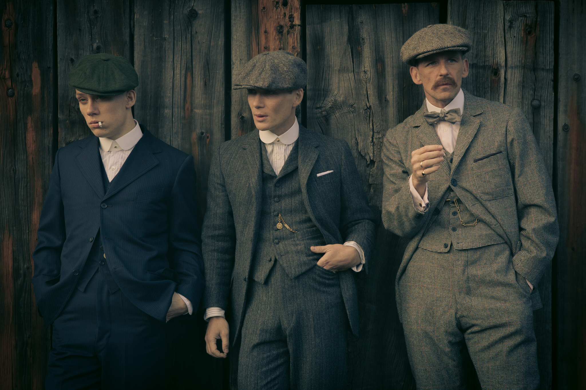
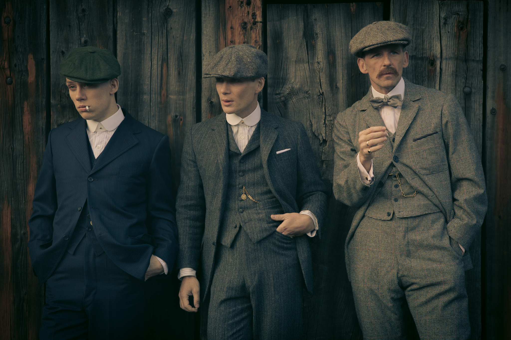
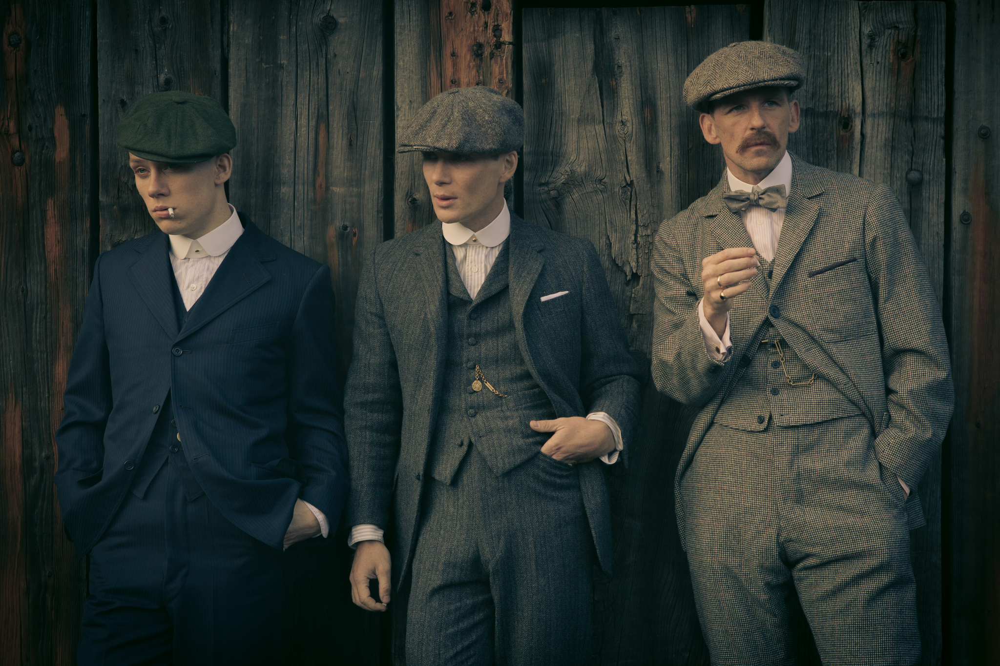
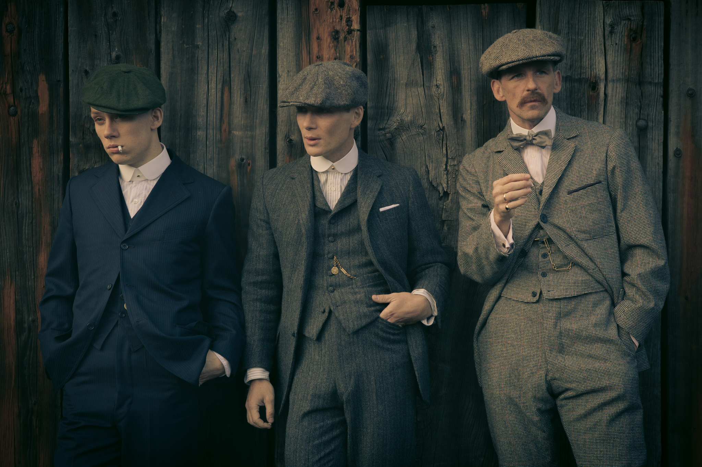

«Острые козырьки» (Peaky Blinders) — британский криминальный драматический сериал, созданный Стивеном Найтом в 2013 году для телеканала BBC Two и повествующий о деятельности преступного клана Шелби в Бирмингеме в 1920-е годы. Первый сезон гангстерского сериала, состоящий из шести эпизодов, собрал аудиторию в 2,4 млн зрителей. 8 ноября 2014 года руководство телеканала BBC объявило, что продлевает сериал на третий сезон, который стартовал 5 мая 2016 года. В 2019 году сериал получил премию National Television Awards в номинации «лучший драматический сериал». 26 мая 2016 года BBC продлил сериал сразу на два сезона (четвёртый и пятый). 5 мая 2018 года Стивен Найт сказал, что «мы определённо будем делать шестой сезон и, вероятно, сделаем седьмой». Найт указал, что как только сериал будет завершён, за ним может последовать фильм или спин-офф. В январе 2021 года было объявлено, что шестой сезон телесериала «Острые козырьки» станет финальным. Премьера шестого сезона состоялась 27 февраля 2022 года и завершилась 3 апреля 2022 года. Вместо прежде планируемого седьмого сезона будет снято полнометражное продолжение. Английский издатель компьютерных игр Curve Digital выпустил игру в честь сериала под названием Peaky Blinders: Mastermind, выход которой состоялся 20 августа 2020 года. 1920-е годы. Бирмингем. Братья Шелби совсем недавно вернулись с войны. С их появлением связывают начало образования банды под названием "Острые козырьки". Артур Шелби - старший из братьев - именует себя главарём группировки. Но основным участником банды является средний в семье - Томас Шелби. Именно он контролирует всю деятельность группировки. Задача Томаса - сделать семейный бизнес легальным. Четыре кровных брата. Но в делах банды "Острых козырьков" задействовано гораздо больше членов. Послевоенные годы полностью изменили Томаса. Герой постарался убить в себе нежные и трепетные чувства. Он захотел стать чёрствым и закрытым от чужих бед. Однако появление Грейс разбудило в нем искренние эмоции. После назначения нового начальника полиции у братьев Шелби возникли неприятности. Всемогущая банда "Острые козырьки" попала под зачистку города от преступности. Инспектор Честер Кэмпбелл долго и жестко вёл допрос главаря группировки. Однако это не принесло желаемых результатов. За членами группировки идёт постоянная слежка, банду пытается контролировать агент начальника полиции. Семейный бизнес Шелби "пошёл в гору". Братья решили обосноваться на юге, в Лондоне. Но в этом городе разгорелась настоящая война. Итальянская и еврейская мафия не могут поделить сферы влияния. Кроме того, Томаса Шелби втянули в новые разборки. Фении и тайная британская служба устроили заговор. Впереди насыщенные и непредсказуемые события.